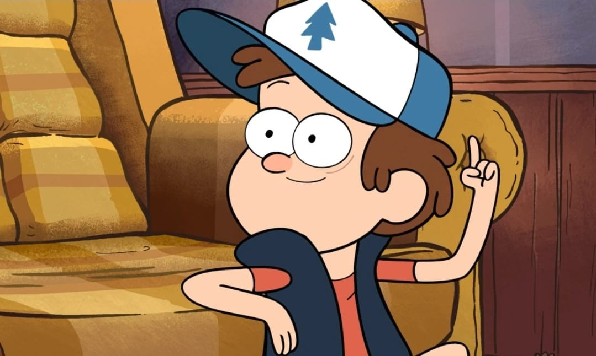
Dipper Pines
Es inteligente, curioso y aventurero. Siempre intenta encontrar respuestas a los misterios del pueblo.
Dipper encuentra el Diario 3, que contiene informacion sobre criaturas extrañas y misterios de Gravity Falls.
EL BOSQUE ESCONDE SECRETOS...
Un pequeño pueblo, misterios inexplicables y secretos que jamás imaginarías.
El verano donde nada es lo que parece...
Gravity Falls narra las vacaciones de los mellizos Dipper y Mabel Pines en un pueblo de Oregón repleto de secretos paranormales. Tras encontrar un misterioso diario en el bosque, los hermanos descubren que las criaturas mágicas y las anomalías del lugar son reales. Junto a su tío abuelo Stan y sus amigos de «La Cabaña del Misterio», los niños investigan estos enigmas mientras se enfrentan a Bill Cipher, un peligroso demonio interdimensional que planea desatar el apocalipsis antes de que termine el verano.
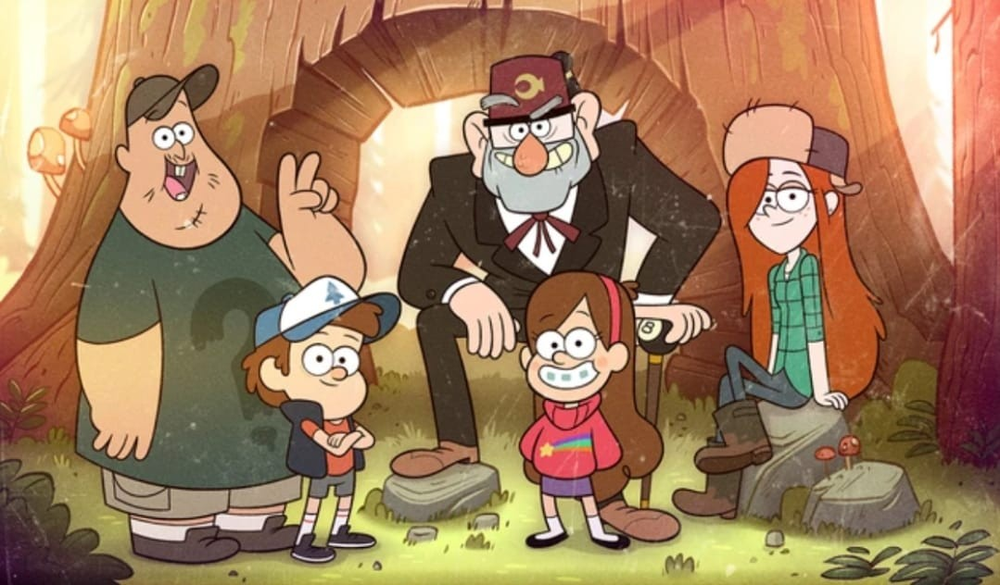
Cada uno tiene una personalidad diferente y un papel importante en las aventuras de Gravity Falls.

Es inteligente, curioso y aventurero. Siempre intenta encontrar respuestas a los misterios del pueblo.
Dipper encuentra el Diario 3, que contiene informacion sobre criaturas extrañas y misterios de Gravity Falls.
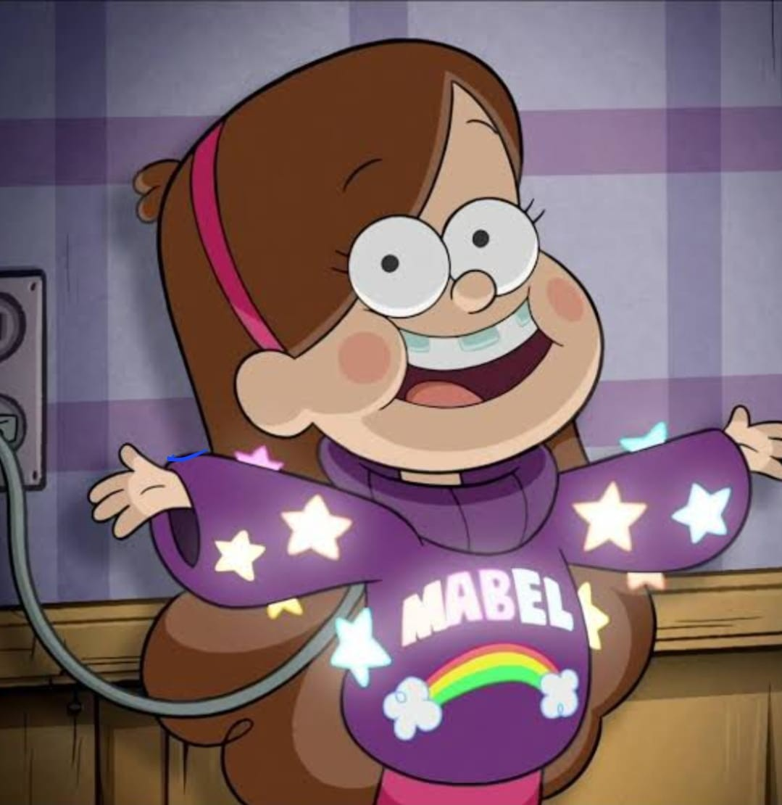
Es alegre, creativa y espontánea. Le encanta divertirse y vivir aventuras junto a su hermano.
Su cerdito mascota se llama Pato y es uno de sus compañeros mas queridos.
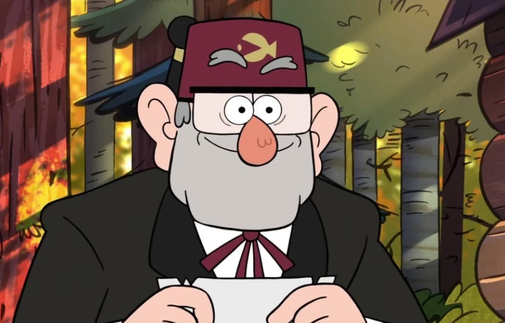
Es el dueño de la Cabaña del Misterio. Le gusta ganar dinero y ocultar algunos secretos.
Stan paso años trabajando para reparar la maquina que le permitiria recuperar a su gemelo, Ford, despues de haberlo enviado accidentalmente a otra dimension.
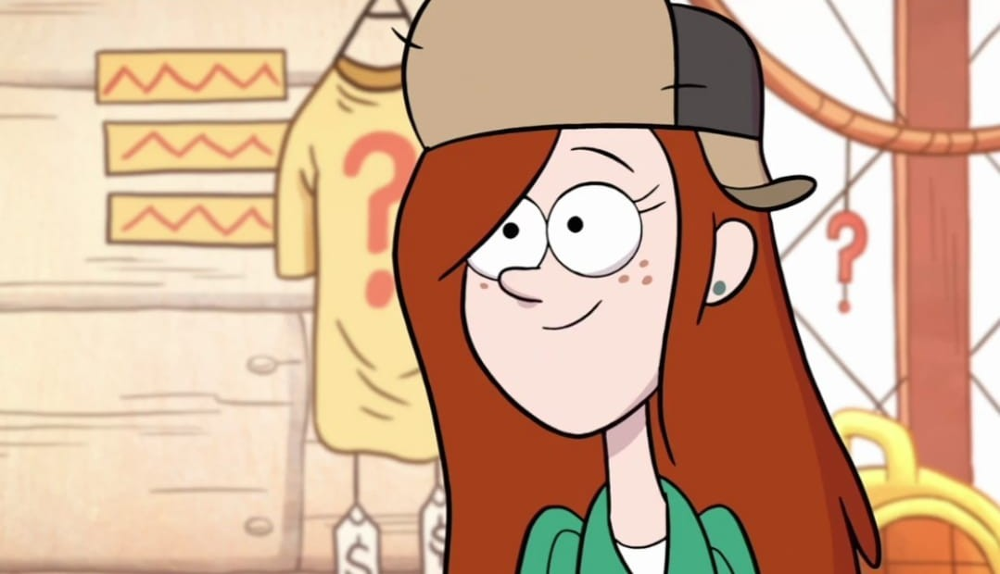
Es relajada, valiente y divertida. Trabaja en la Cabaña del Misterio y acompaña al grupo.
Wendy esta representada por el simbolo de hielo en la rueda relacionada con la derrota de Bill.
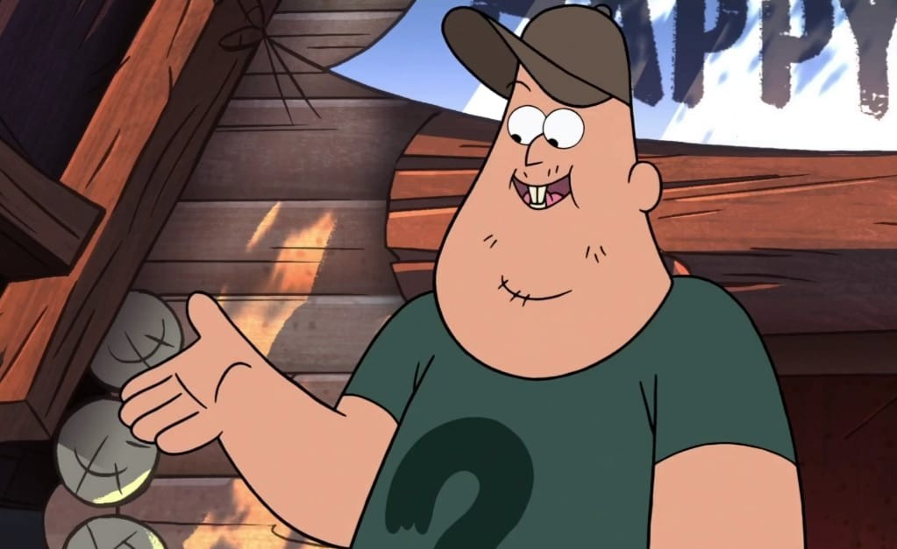
Es amable, gracioso y leal. Ayuda a Stan y siempre está dispuesto a apoyar a sus amigos.
Trabaja en la Cabaña del misterio y ve a Stan como su figura paterna.

Es una entidad sobrenatural muy poderosa que representa una de las mayores amenazas de la historia.
Puede entrar a los sueños de las personas
| Personaje | Tipo | Habilidad | Fortaleza | Personalidad |
|---|---|---|---|---|
| Dipper Pines | Humano | Investigar misterios | Inteligencia y observación | Curioso, analítico y valiente |
| Mabel Pines | Humana | Crear manualidades | Creatividad y optimismo | Alegre, divertida y cariñosa |
| Stanley Pines | Humano | Negociar y hacer negocios | Ingenio y perseverancia | Astuto, bromista y protector |
| Stanford Pines | Humano | Investigación científica | Conocimiento e inteligencia | Serio, curioso y decidido |
| Soos Ramírez | Humano | Reparar objetos | Lealtad y habilidad técnica | Amable, gracioso y servicial |
| Wendy Corduroy | Humana | Supervivencia y actividades al aire libre | Valentía y habilidad física | Relajada, independiente y valiente |
| Bill Cipher | Entidad extradimensional | Manipular la realidad | Poderes sobrenaturales e inteligencia | Manipulador, caótico y arrogante |
| Pacifica Northwest | Humana | Organización y estrategia social | Seguridad y capacidad de adaptación | Orgullosa, competitiva y cambiante |
| Gideon Gleeful | Humano | Manipulación y actuación | Persuasión y astucia | Ambicioso, manipulador y rencoroso |
| McGucket | Humano | Inventar máquinas | Ingenio y creatividad técnica | Excéntrico, inteligente y creativo |
Contienen información sobre criaturas, anomalías y secretos ocultos en el pueblo.
Entre los árboles y senderos se esconden seres extraños y sucesos inexplicables.
Sus intenciones y habilidades lo convierten en uno de los enigmas más importantes.
Dipper y Mabel estan basados directamente en el creador de la serie. Alex Hirsch, y en su hermana gemela, Ariel.
El apodo "Dipper" viene de su marca de nacimiento en la frente, que parece la Osa Mayor(Big Dipper.) Su nombre real es Mason.
La serie esconde mensajes y símbolos que los espectadores pueden intentar descifrar.
Alex Hirsch hace la voz de varios personajes.
La Cabaña no es solo una atraccion turistica, tambien sirve como escenario para varios secretos de la familia Pines.
Despues del final de la serie, los fans participaron en una busqueda internacional de una estatua de Bill Cipher.
Gravity Falls es una serie que me gusta porque combina el misterio, la comedia y la aventura. Cada episodio tiene algo interesante y muchas veces aparecen pistas que hacen que quiera descubrir qué está pasando.
Me gustan los personajes porque cada uno tiene una personalidad diferente. Tambien me parece interesante como Dipper y Mabel enfrentan misterios y se ayudan durante sus aventuras.
Dipper es mi personaje favorito porque siempre quiere descubrir que secretos esconde Gravity Falls y siempre esta tratando de buscar respuestas a cada suceso extraño que sucede en el pueblo.
La serie me enseña que es importante confiar en las personas que queremos, trabajar en equipo y tener curiosidad por aprender cosas nuevas. También muestra que las apariencias pueden engañar y que no todo es lo que parece.
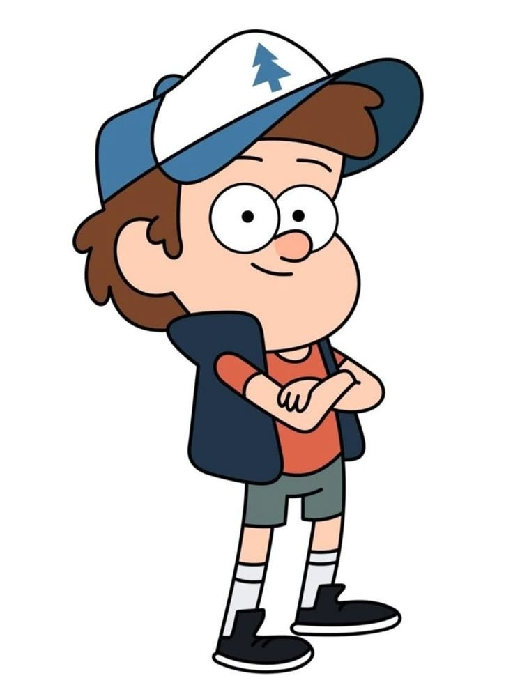
Dipper Pines es uno de los protagonistas de Gravity Falls. Es un chico curioso, inteligente y observador que siempre intenta descubrir los secretos del pueblo.
Es valiente, curioso, inteligente y perseverante. Aunque a veces siente miedo o duda de sí mismo, intenta encontrar soluciones y proteger a las personas que quiere.
Dipper es mi personaje favorito porque es inteligente, le gusta investigar y nunca se rinde fácilmente cuando quiere descubrir la verdad. Me gusta su forma de enfrentar los misterios y aprender de cada aventura.
Momentos, personajes y misterios de un verano inolvidable.
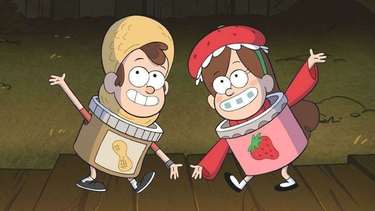
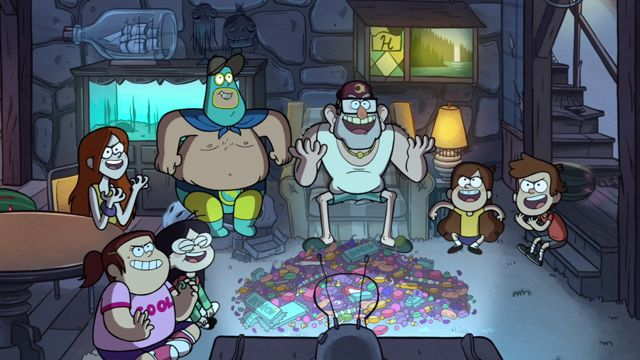
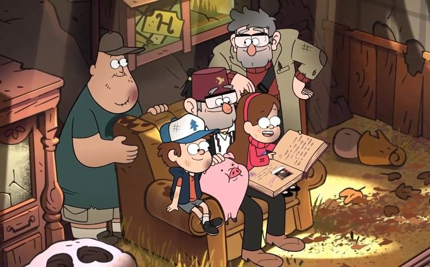
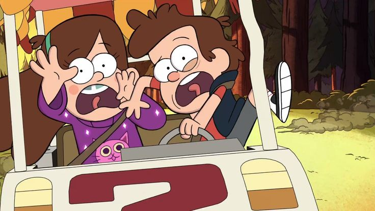
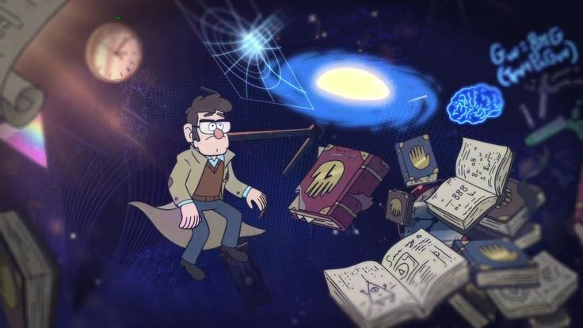
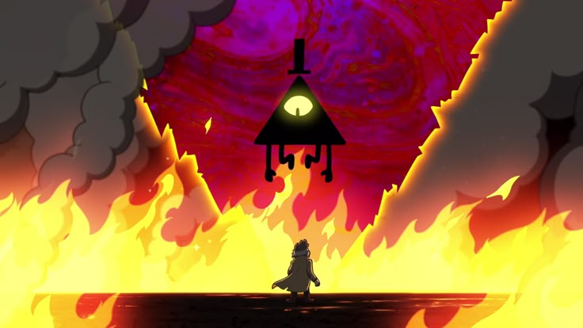
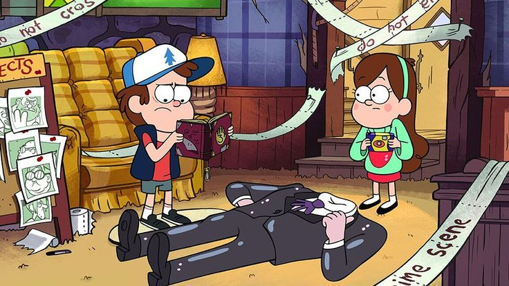
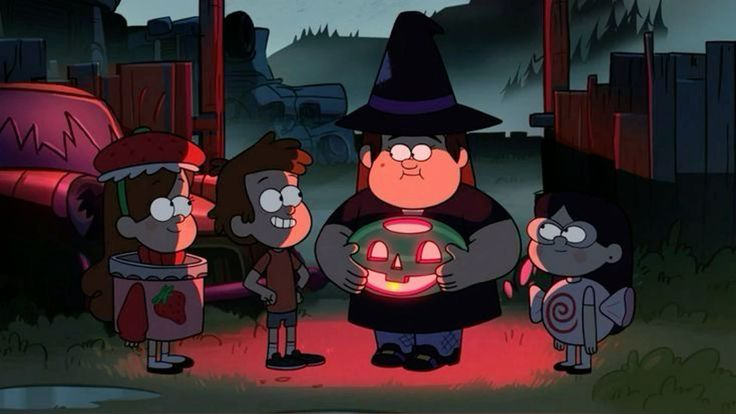
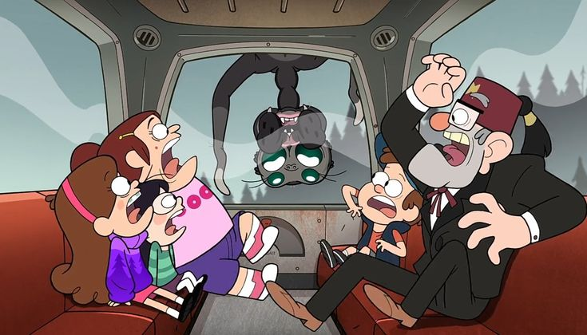
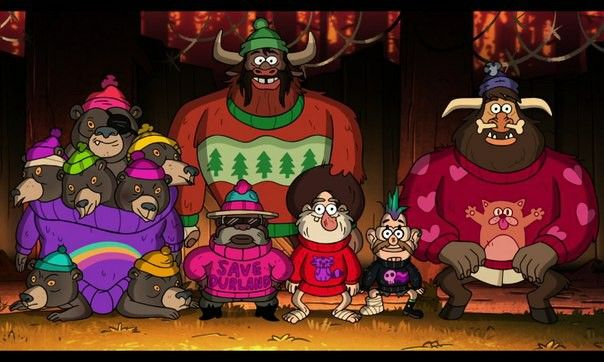
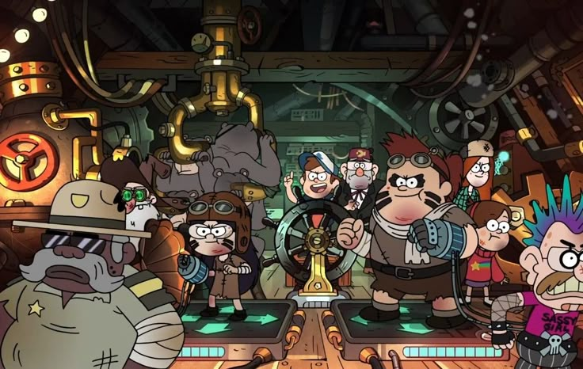
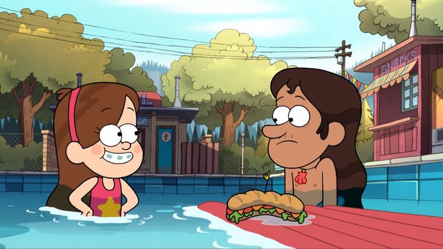
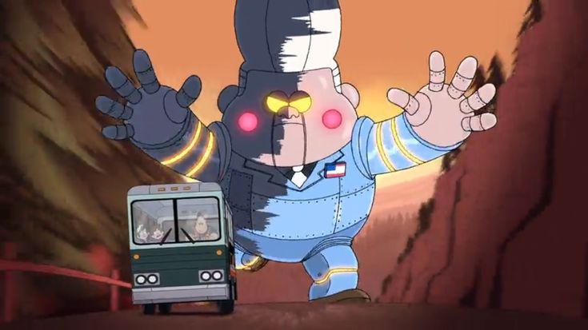
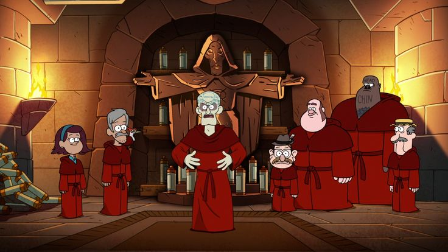
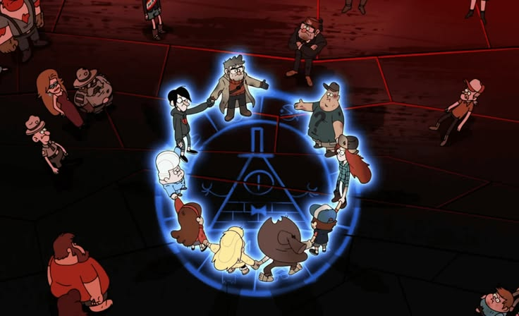
En Gravity Falls, cada secreto descubierto puede llevarte a uno todavía más extraño.